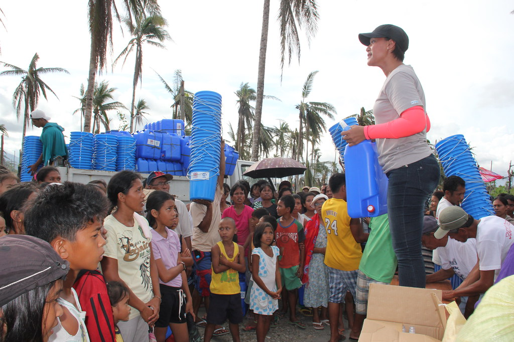
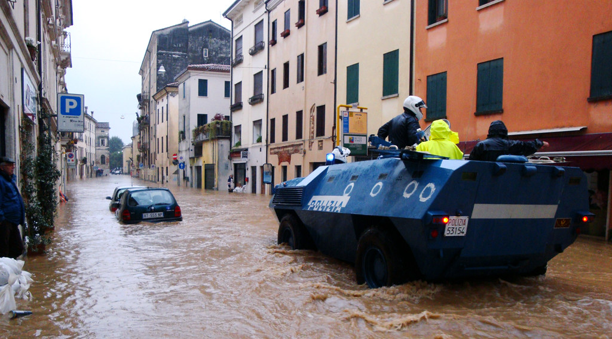
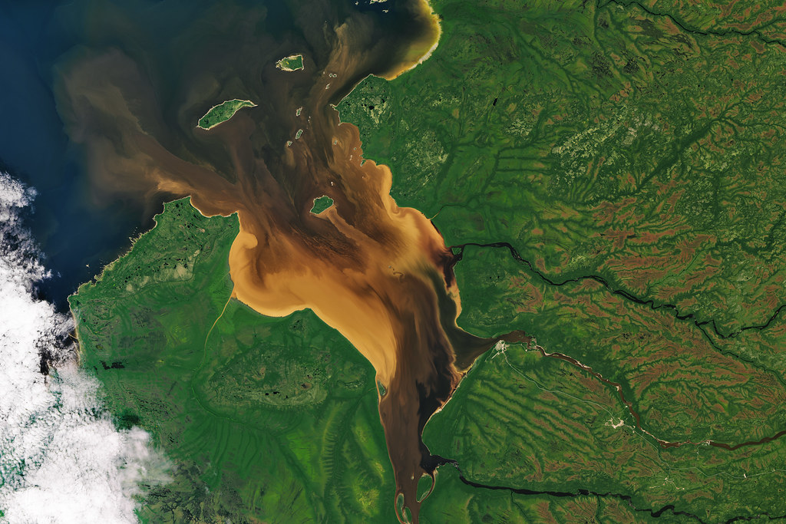
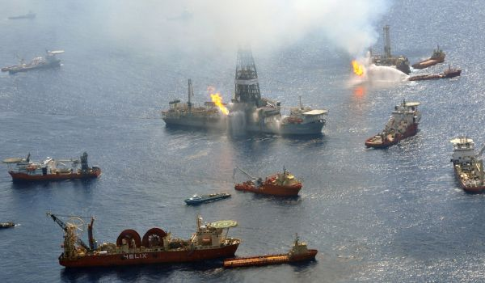
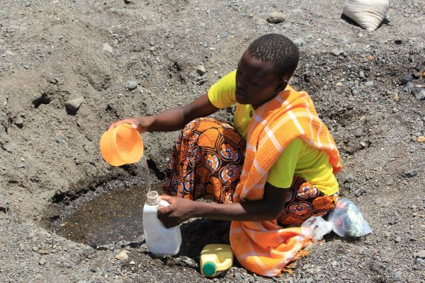

First stepsNo source you know is safe
Find a safer supply, get local advice, and protect any water confirmed safe.
Open field guide Photo: “Distributing buckets and jerrycans in Santo Nino, Leyte” by DFID · CC BY 2.0Choose a situation to open a saved, illustrated guide. The guides are designed to work without video, map tiles, or external links.
Cloth or settling only removes some visible particles. It does not make water safe to drink. It does not disinfect water. If fuel or chemicals may be present, do not handle, boil, or filter the water.

First stepsFind a safer supply, get local advice, and protect any water confirmed safe.
Open field guide Photo: “Distributing buckets and jerrycans in Santo Nino, Leyte” by DFID · CC BY 2.0
Flood or sewage concernFloodwater can carry germs. Avoid contact and follow local boil advice.
Open field guide Photo: “Vicenza flooding Nov. 1, 2010” by US Army Africa · CC BY 2.0
Visible particlesChoose a 5 L, 20 L, or 60 L batch for settling and cloth pre-filtration only.
Choose a batch size Photo: “Some Tea With Your River, Sir?” by NASA Goddard · CC BY 2.0
Possible chemical hazardStop use, avoid contact, keep others away, and report it. There is no DIY treatment plan.
Open safety guide Photo: “Oil Spill” by DVIDSHUB · CC BY 2.0
Drought, heat, or shortageMake a household reserve plan, prioritize safe uses, and avoid assuming a new source is safe.
Build a reserve plan Photo: “Digging for drinking water in a dry riverbed” by DFID · CC BY 2.0Choose a suitable covered container and keep hands and dirty utensils out of stored water.
Open storage guide Photo: “Distributing buckets and jerrycans in Santo Nino, Leyte” by DFID · CC BY 2.0Photos are real-world examples, not evidence about your local source or instructions to copy a particular setup. Attribution and license details are included with each image.